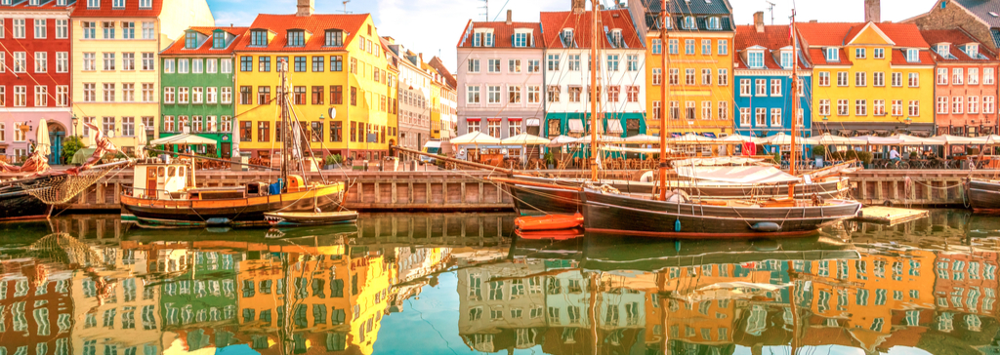
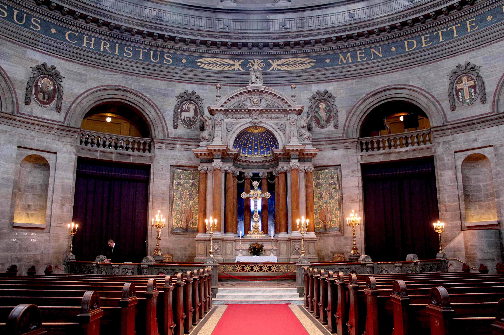
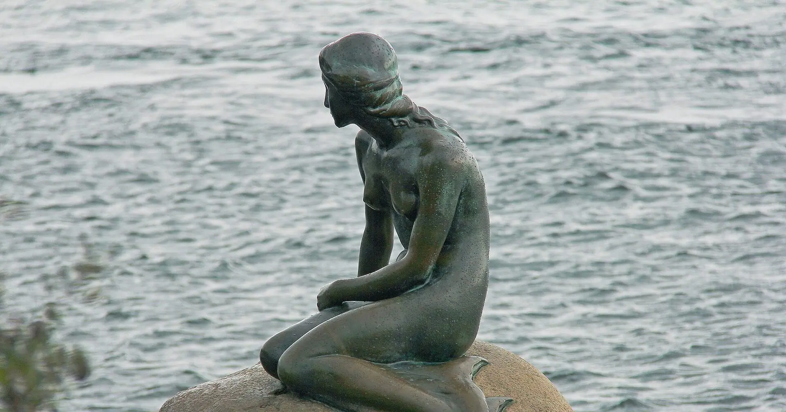
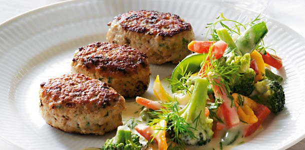
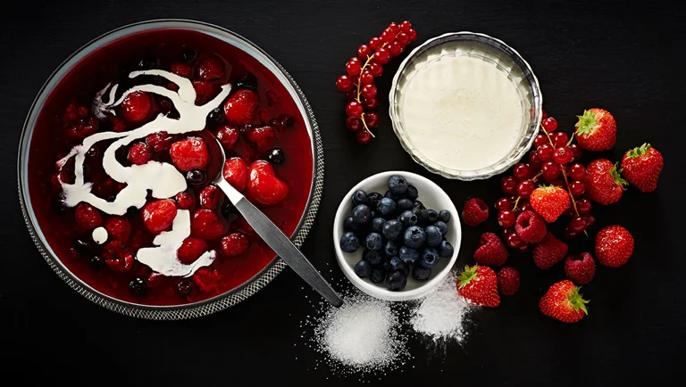
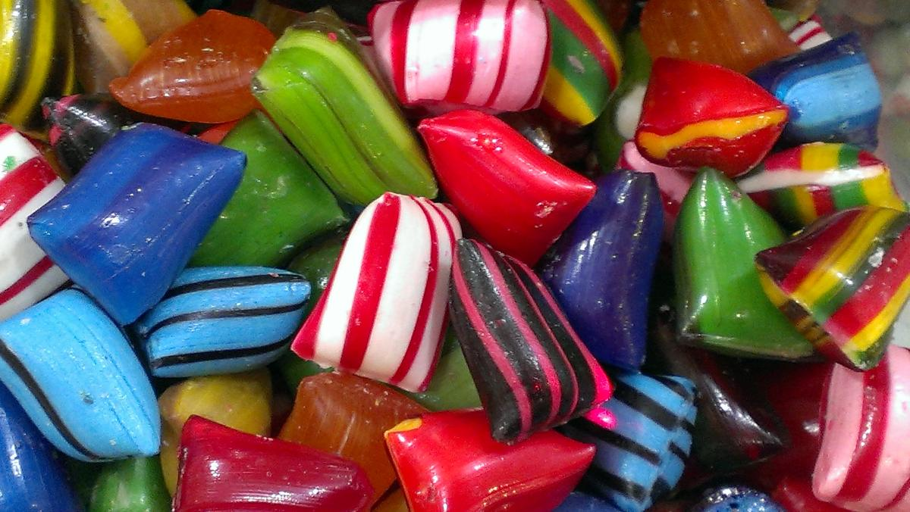
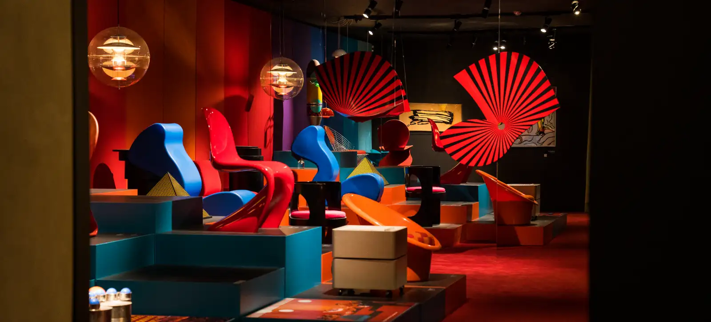

LANDMARKS

Christianshavn is a picturesque, canal-woven neighborhood in Copenhagen, Denmark, famous for its maritime atmosphere, historic architecture, and alternative culture. Founded in 1618 by King Christian IV as part of the city's fortification plan, the district was built on artificial islands and heavily inspired by the canal systems of Amsterdam. Today, the area is defined by narrow cobbled streets, beautiful 18th-century merchant houses, and lively canals lined with sailboats and houseboats.

Frederik's Church, popularly known as the Marble Church (Marmorkirken), is an iconic Evangelical Lutheran church in Copenhagen, Denmark, famous for its monumental copper green dome. Designed in 1740 by architect Nicolai Eigtved to commemorate the 300th anniversary of the coronation of the House of Oldenburg, the church was intended to be the centerpiece of the elegant Frederiksstaden district. However, due to budget cuts and the death of the architect, construction was halted for over a century, leaving the building as a massive, unfinished ruin until the prominent Danish financier C.F. Tietgen stepped in to fund its completion in the late 19th century. Finally opened in 1894, the church features the largest church dome in Scandinavia, which spans 31 meters and rests on twelve massive pillars, drawing heavy architectural inspiration from St. Peter's Basilica in Rome. Today, it stands directly opposite Amalienborg Palace, creating a stunning architectural axis and serving as one of the city's most breathtaking landmarks.

The statue was commissioned in 1909 by Carl Jacobsen (the son of the founder of Carlsberg Brewery). He was fascinated by a ballet performance of The Little Mermaid at the Royal Danish Theatre, based on the fairy tale by Hans Christian Andersen.
CULINARY DELIGHTS
Traditional Danish food is characterized by hearty "mormormad" (grandma’s food) with a focus on meat, potatoes, and gravy. Danish food culture is rooted in the old farming society, where ingredients like pork, potatoes, and grains were readily available.

Stegt flæsk med persillesovs is the official national dish of Denmark, consisting of crispy pork belly served with boiled potatoes and a rich parsley cream sauce. The dish features thick slices of pork belly that are generously salted and either pan-fried or oven-roasted until the fat renders completely and the meat becomes incredibly crunchy. It is traditionally accompanied by tender boiled potatoes and a smooth, velvety white béchamel sauce packed with fresh, finely chopped curly parsley, which provides a vibrant contrast to the rich, savory pork. Deeply rooted in Danish culinary history, this comforting and rustic meal was officially voted the country's national dish in 2014 by popular vote, celebrating a timeless tradition of simple, hearty, and satisfying comfort food.

Frikadeller are traditional Danish meatballs that are widely considered one of the most popular national dishes in Denmark. Unlike American or Italian meatballs, they are typically made from a mixture of minced pork and veal, or pork alone, combined with finely chopped onions, eggs, milk or water, and breadcrumbs or flour. This mixture is seasoned simply with salt and pepper, shaped into slightly flattened, oval patties using a large spoon, and then pan-fried in plenty of butter until they develop a crisp, golden-brown crust while remaining tender and juicy on the inside. Frikadeller are a versatile staple of Danish cuisine, traditionally served hot for dinner alongside boiled potatoes, thick brown gravy, and pickled red cabbage or beets, but they are equally popular served cold, sliced on top of buttered rye bread (rugbrød) for a classic Danish lunch (smørrebrød).

Rødgrød med fløde is a traditional Danish dessert that translates to "red porridge with cream," widely considered a staple of Danish culinary identity. This classic summer dish is made by stewing red summer berries—typically a mix of redcurrants, blackcurrants, raspberries, strawberries, and sometimes sour cherries—with sugar until they break down into a rich, fragrant compote. The mixture is then thickened slightly with starch, such as potato flour or cornstarch, to achieve a smooth, pudding-like consistency. It is traditionally served chilled or at room temperature, generously topped with cold, fresh heavy cream or whole milk, which cuts through the tartness of the berries to create a perfectly balanced flavor profile.
CULTURAL EXPERIENCES

Danish bolsjer (historically spelled bolcher) are traditional hard-boiled candies that are deeply rooted in Denmark's confectionery culture. The word itself is believed to derive from the Low German word boltje, meaning "little ball". Their history began around the 12th century when sugar first arrived in Europe, and they were initially produced by pharmacies to mask the bitter taste of medicine. It was not until the 1700s that production shifted into the hands of specialized sugar bakers.These hard candies are famous for their distinct, old-school flavors, most notably the iconic "Kongen af Danmark" (The King of Denmark), an anise and licorice-flavored red candy created in the 17th century as a cough remedy for King Christian V. Other traditional and widely loved varieties feature strong salty licorice, menthol, and bergamot. To this day, Denmark preserves the art of handmade candy making, and historic manufacturers like Sømods Bolcher in Copenhagen continue to craft these colorful treats by hand using traditional methods and century-old equipment.

Designmuseum Denmark offers an experience of architecture and design history spanning the past and present, as well as insights into what the future may bring. One of the museum’s highlights is the permanent exhibition Danish Modern. Danish design is world-renowned, but what led to its success? And who were the major Danish designers of the 20th century? Danish Modern tells the story of Danish design from the 1920s to the year 2000, focusing on the creation of some of the most iconic Danish design objects.